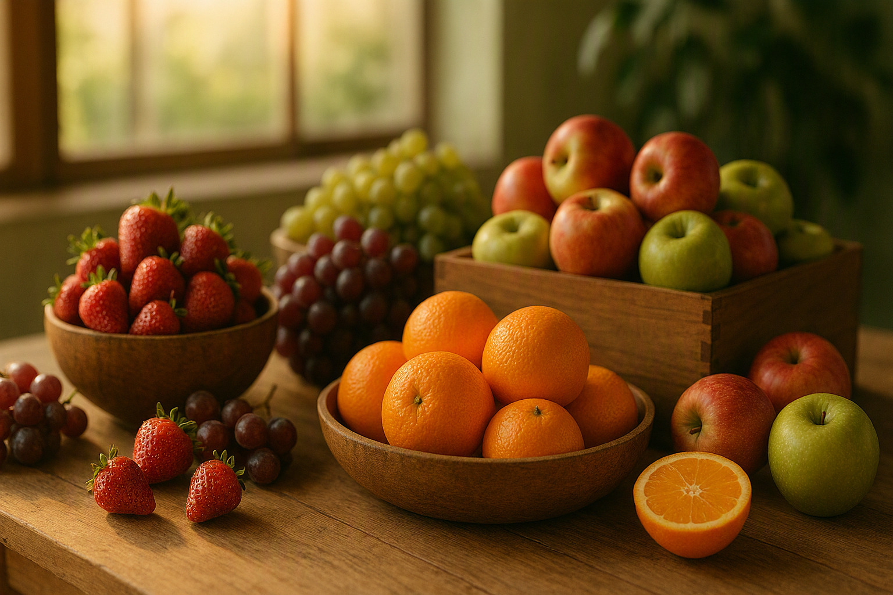
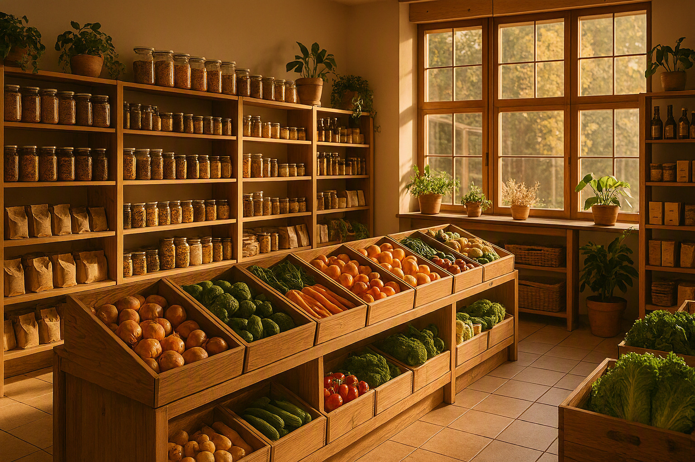
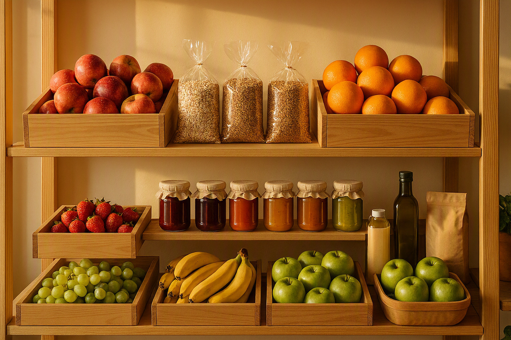
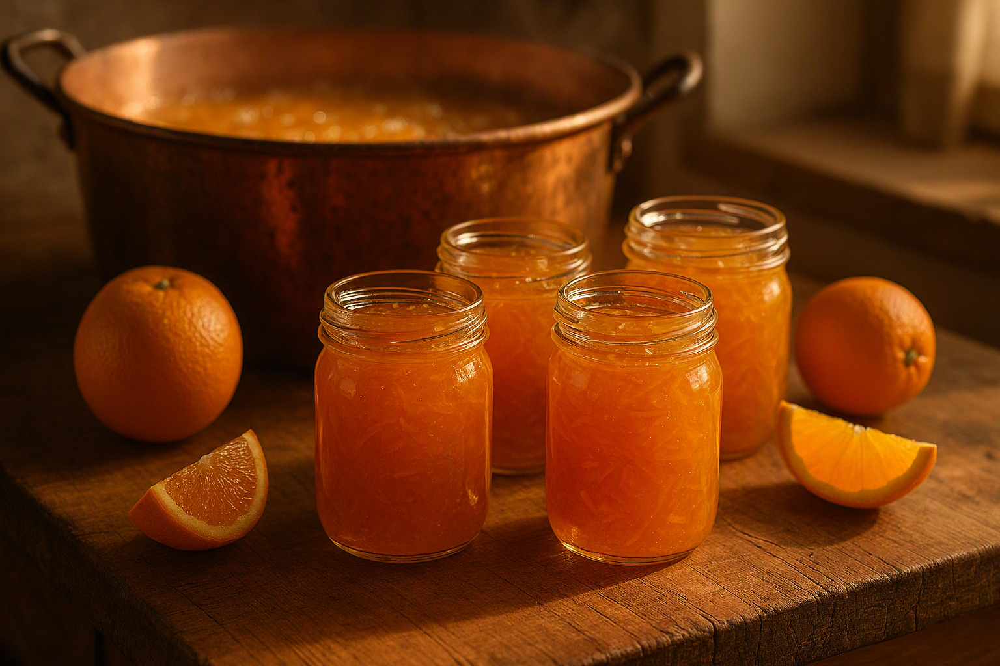
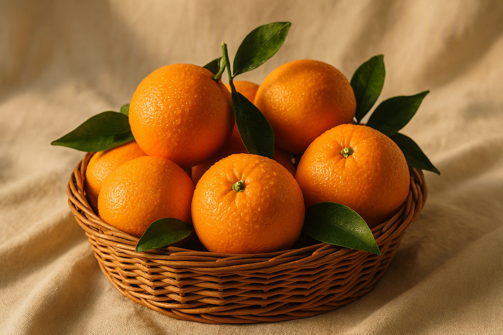
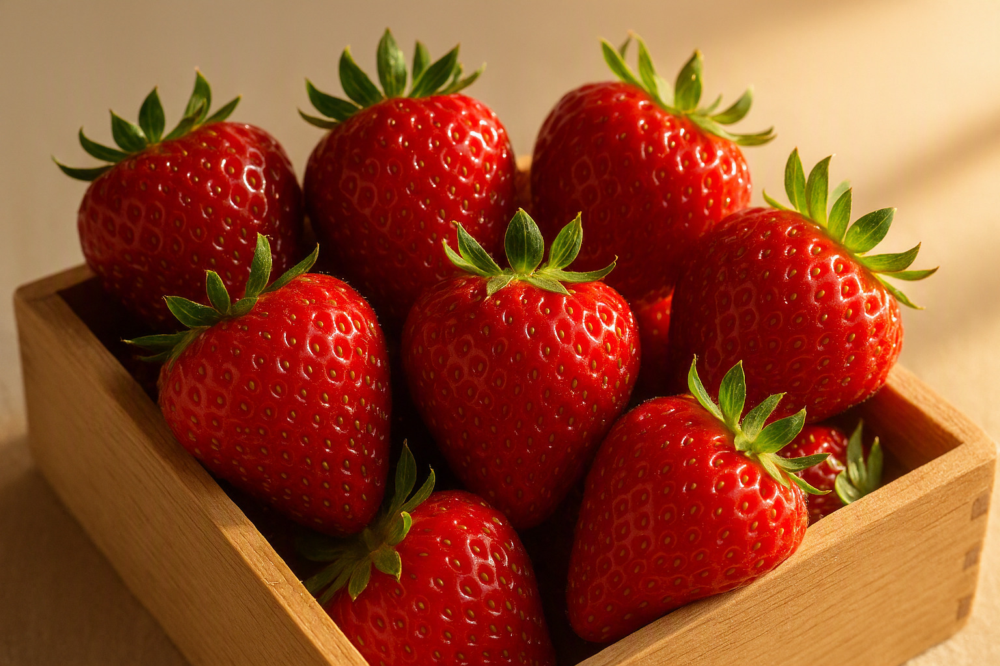
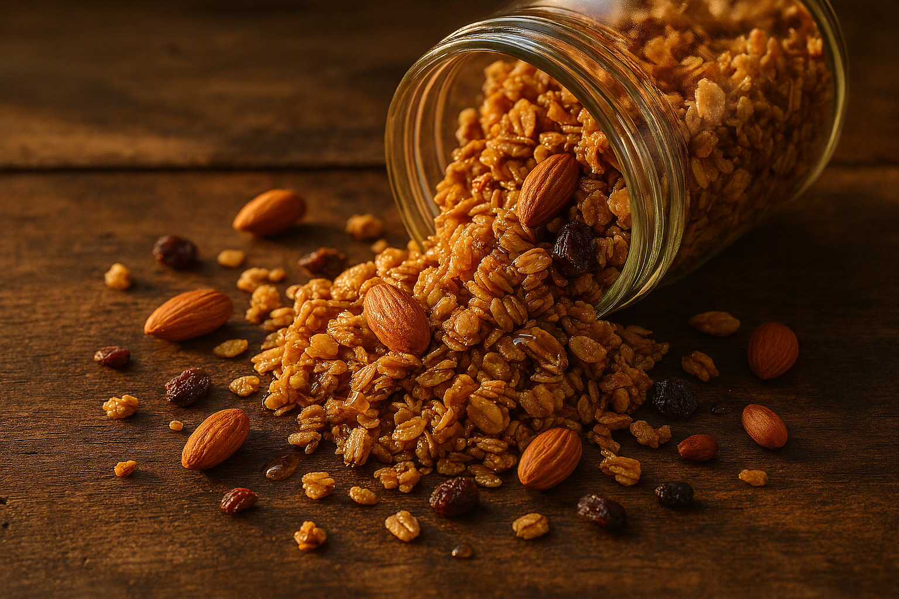
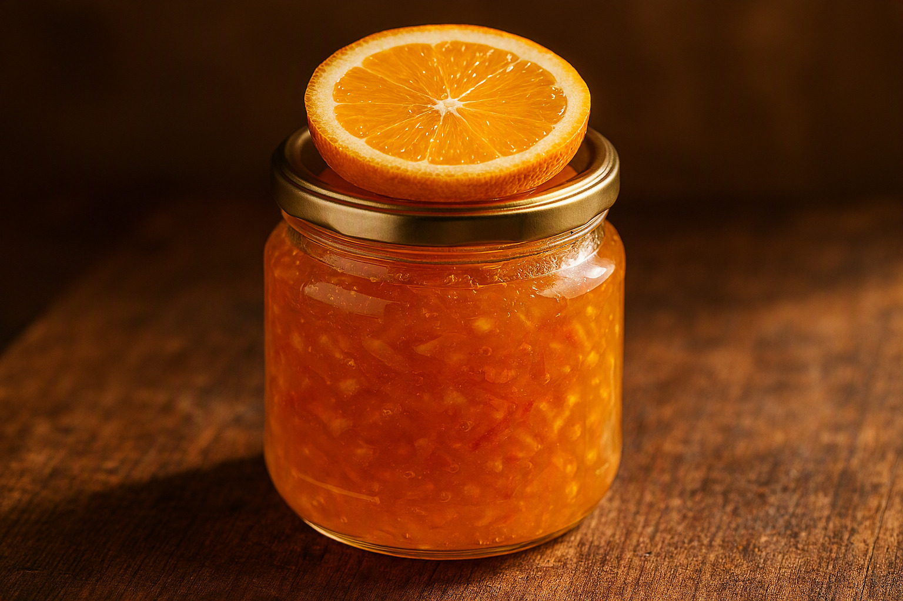

Frutas Frescas
Frutas de temporada seleccionadas a mano, cosechadas en su punto óptimo de madurez para garantizar sabor y nutrientes.
Ver selecciónAlimentos naturales de origen responsable
Descubrí frutas de temporada, alimentos integrales y mermeladas artesanales elaboradas con ingredientes seleccionados a mano en cada estación del año.


En Cosecha Dorada creemos que comer bien comienza con elegir bien. Seleccionamos cada producto directamente de productores locales y regionales que comparten nuestro compromiso con la calidad y el respeto por la tierra.
Nuestra misión es acercarte ingredientes frescos, nutritivos y deliciosos que transformen tu rutina diaria en un ritual de bienestar. Desde las frutas recién cosechadas hasta nuestras mermeladas elaboradas en pequeños lotes, cada detalle refleja nuestro amor por lo natural.
Una selección curada de productos premium para una alimentación consciente, nutritiva y deliciosa en cada comida.

Frutas de temporada seleccionadas a mano, cosechadas en su punto óptimo de madurez para garantizar sabor y nutrientes.
Ver selecciónGranos, semillas y cereales integrales sin procesar, ideales para una alimentación equilibrada y nutritiva.
Ver selecciónSelección de productos orgánicos certificados, envasados de forma responsable y libres de aditivos innecesarios.
Ver selecciónElaboradas en pequeños lotes con frutas frescas de nuestra selección, sin conservantes artificiales.
Ver selección
Transformamos las mismas naranjas que seleccionamos en nuestros estantes en mermeladas artesanales de sabor incomparable. Cada frasco es el resultado de un proceso cuidadoso: cocción lenta, ingredientes mínimos y recetas que honran el sabor natural de la fruta.
Encontrar Sabores AuténticosUna muestra de lo mejor de nuestra cosecha: ingredientes premium para elevar tu alimentación diaria.

Naranjas valencianas de cosecha reciente, jugosas y ricas en vitamina C. Perfectas para jugos naturales o consumo directo.

Frutillas cultivadas sin pesticidas de síntesis, dulces y aromáticas. Ideales para desayunos, postres y smoothies saludables.

Mezcla crujiente de avena, nueces y miel de origen local. Elaborada artesanalmente sin azúcares refinados añadidos.

Elaborada con naranjas de nuestra selección en lotes pequeños. Textura sedosa y sabor intenso, sin conservantes artificiales.
Cuatro pilares que definen nuestra promesa con cada cliente y cada producto que llega a tu mesa.
Cada producto pasa por un riguroso proceso de selección. Solo aceptamos lo mejor de cada cosecha para garantizar frescura y sabor excepcional.
Trabajamos con productores certificados que cultivan sin químicos de síntesis, respetando los ciclos naturales de la tierra.
Priorizamos envases reciclables, reducimos el desperdicio y apoyamos la agricultura local para minimizar nuestra huella ambiental.
Nuestras mermeladas y productos artesanales se elaboran en pequeños lotes con técnicas tradicionales y recetas de autor.
Desde que descubrí Cosecha Dorada, mis compras semanales cambiaron por completo. Las naranjas son las más jugosas que probé y la mermelada artesanal tiene un sabor casero increíble.
Como madre de familia, valoro la transparencia y la calidad. Mis hijos adoran las frutillas y yo confío en que cada producto es natural y cuidadosamente seleccionado.
La granola orgánica es mi desayuno favorito. Se nota la diferencia en la calidad de los ingredientes. Cosecha Dorada se convirtió en mi tienda de confianza.
¿Tenés consultas sobre nuestros productos o querés hacer un pedido especial? Escribinos y te responderemos a la brevedad.